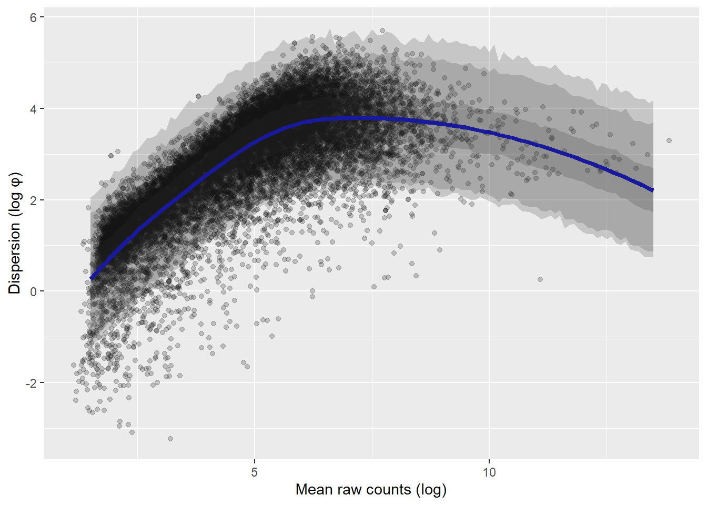
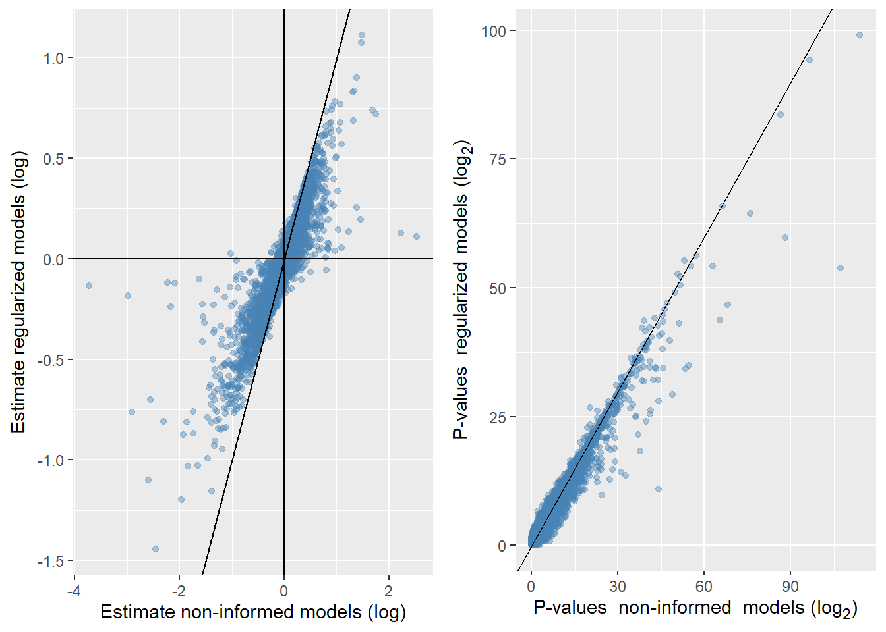

clusterProfiler v4.20.0 Learn more at https://yulab-smu.top/contribution-knowledge-mining/
Please cite:
T Wu, E Hu, S Xu, M Chen, P Guo, Z Dai, T Feng, L Zhou, W Tang, L Zhan,
X Fu, S Liu, X Bo, and G Yu. clusterProfiler 4.0: A universal
enrichment tool for interpreting omics data. The Innovation. 2021,
2(3):100141
Attaching package: 'clusterProfiler'
The following object is masked from 'package:purrr':
simplify
The following object is masked from 'package:stats':
filter
Code
library(org.Hs.eg.db)
Loading required package: AnnotationDbi
Loading required package: stats4
Loading required package: BiocGenerics
Loading required package: generics
Attaching package: 'generics'
The following object is masked from 'package:marginaleffects':
refit
The following object is masked from 'package:lubridate':
as.difftime
The following object is masked from 'package:dplyr':
explain
The following objects are masked from 'package:base':
as.difftime, as.factor, as.ordered, intersect, is.element, setdiff,
setequal, union
Attaching package: 'BiocGenerics'
The following object is masked from 'package:limma':
plotMA
The following object is masked from 'package:dplyr':
combine
The following objects are masked from 'package:stats':
IQR, mad, sd, var, xtabs
The following objects are masked from 'package:base':
anyDuplicated, aperm, append, as.data.frame, basename, cbind,
colnames, dirname, do.call, duplicated, eval, evalq, Filter, Find,
get, grep, grepl, is.unsorted, lapply, Map, mapply, match, mget,
order, paste, pmax, pmax.int, pmin, pmin.int, Position, rank,
rbind, Reduce, rownames, sapply, saveRDS, table, tapply, unique,
unsplit, which.max, which.min
Loading required package: Biobase
Welcome to Bioconductor
Vignettes contain introductory material; view with
'browseVignettes()'. To cite Bioconductor, see
'citation("Biobase")', and for packages 'citation("pkgname")'.
Loading required package: IRanges
Loading required package: S4Vectors
Attaching package: 'S4Vectors'
The following object is masked from 'package:clusterProfiler':
rename
The following objects are masked from 'package:lubridate':
second, second<-
The following objects are masked from 'package:dplyr':
first, rename
The following object is masked from 'package:tidyr':
expand
The following object is masked from 'package:utils':
findMatches
The following objects are masked from 'package:base':
expand.grid, I, unname
Attaching package: 'IRanges'
The following object is masked from 'package:clusterProfiler':
slice
The following object is masked from 'package:lubridate':
%within%
The following objects are masked from 'package:dplyr':
collapse, desc, slice
The following object is masked from 'package:purrr':
reduce
The following object is masked from 'package:grDevices':
windows
Attaching package: 'AnnotationDbi'
The following object is masked from 'package:clusterProfiler':
select
The following object is masked from 'package:dplyr':
select
Joining with `by = join_by(participant)`
Joining with `by = join_by(participant, leg)`
Code
# Read gene-level data dat <-readRDS("data-raw-rnaseq/relief_gene.RDS"); dat <- dat$expected_count# Number of samples to RNA-seqnsamp <- stringr::str_to_sentence(as.english(nrow(metadata)))nsamp_included <- (ncol(dat) -1)
Two hundred and six total RNA samples were selected for RNA-sequencing analysis of which 192 samples passed initial quality assessment (RIN > 8) and were used in downstream analyses. Purified mRNA (poly-T oligo-attached magnetic beads) was used for library preparation and subsequent 150-bp paired-end sequencing (Illumina NovaSeq, Novogene Europe, Cambridge, United Kingdom). Raw reads were filtered (SOFTWARE, settings) and aligned to the Human genome (Release) followed by gene and transcript level quantification using RSEM (version).
Gene counts (filtered for low-abundance targets) were modeled using a regularized negative binomial generalized linear mixed model [@glmmmtb] including model parameters for sex, time (baseline, week 3 and week 12), age-group (young and old) and condition (low- and moderate-volume) and the interaction between time age and condition. A varying intercept (random effect) was used for participant, and the dispersion parameter was estimated using the nbinom2 parameterization available in glmmTMB[@glmmmtb]. The effective library size [@robinson2010;@edger] was included as an offset to account for sequencing depth. Regularization through an empirical Bayes shrinkage approach[@efron2010] was achieved using a two-step approach. First, naive models were fitted for all target counts (gene/transcript) using our in-house pipeline [@seqwrap] and estimates for all model parameters (except the intercept) were used to create priors for subsequent informed models. Fixed effect priors were constructed using a normal distribution with mean and standard deviations from each parameter value from the first model pass, the prior for the varying intercepts were constructed using a gamma distribution with the shape parameter informed by the mean from the naive model estimates and the scale parameter fixed to 2. Finally, the dispersion parameter priors were constructed by fitting a trend model (Local Polynomial Regression Fit) to the association between raw mean log counts and log dispersion across all targets. The predicted dispersion at target-specific raw mean log count was used as the mean and the model residual standard error was used as the standard deviation to define a normally distributed target-specific prior.
RNA-seq analyses - Supplementary information
Before fitting preliminary models to gene count data, the count matrix is filtered for low-abundance genes using edgeR::filterByExpr using sex and age as the grouping variable. The count matrix is used to calculate the trimmed mean of M values approach (TMM) [@robinson2010;@edger].
Code
# Confirm sample names in seq_sample_id,# all(colnames(dat[,-1]) %in% metadata$seq_sample_id)# All samples in the data exists in the meta data# all(metadata$seq_sample_id %in% colnames(dat[,-1]))# Not all sample id's are in the data# Subset the metadata to match the datametadata <- metadata |>filter(seq_sample_id %in%colnames(dat[,-1]))# Sort the data # all_of provides a fail safe as it checks that all samples are # in the datadat <- dat |> dplyr::select(gene_id, all_of(metadata$seq_sample_id)) # Filter by expressionkeep <-filterByExpr( dat[,-1],min.count =10,min.total.count =15,large.n =10,min.prop =0.7,group =paste(metadata$sex, metadata$age))# Convert to DGE list for library size normalizationdat_filtered <- dat[keep,] |>mutate(across(starts_with("R"), as.integer)) |>data.frame()y <-DGEList(dat_filtered[,-1])y <-normLibSizes(y, method ="TMM")# Get CPM-values for downstream analyseslogcpm_y <-cpm(y, log =TRUE, prior.count =2)libSize <- y$samples |>rownames_to_column(var ="seq_sample_id") |> dplyr::select(-group)metadata2 <- metadata |>inner_join(libSize) |>mutate(efflibsize = (lib.size * norm.factors) /median(lib.size * norm.factors), ln_efflibsize =log(efflibsize), tx =if_else(time =="t1", "baseline", paste0(time, condition)), tx =factor(tx, levels =c("baseline", "t2low", "t2mod", "t3low", "t3mod")), age =factor(age, levels =c("old", "young")), sex =factor(sex, levels =c("male", "female"))) |> dplyr::select(-lib.size, -norm.factors)
Joining with `by = join_by(seq_sample_id)`
Model prototyping
We are constructing a model that will capture:
Effects of the training intervention averaged over age and volume conditions (descriptive)
Average effects of the training intervention within age groups, averaged over volume conditions (descriptive)
Differences between age group in change from baseline to time 2 and 3, averaged over volume conditions (inferential)
Differences between volume conditions at times 2 and 3, averaged over age groups (inferential)
Differences between volume conditions at times 2 and 3 within age groups (descriptive)
Differences between volume conditions between age groups at times 2 and 3 (inferential)
We separate descriptive from inferential contrasts here to avoid making claims about, e.g., age-group differences based on informal comparisons of within-group effects without a formal contrast. The within-group contrasts can still be used for description. Sex is added as a control variable to balance any sex differences between groups and time points.
The model can be described as
\[
\begin{align}
y_{i[g]} &\sim \operatorname{NB2}(\mu_{i[g]}, \phi_{[g]}) \\
\log(\mu_{i[g]} ) &= \beta_{k[g]}X_i + \log(S_i) + b_{0i[g]} \\
\beta_{k[g]}X_i &= \beta_{0[g]} + \beta_{1[g]}\text{Sex}_i + \beta_{2[g]}\text{A}_i + \beta_{3[g]}\text{TX1}_i + \beta_{4[g]}\text{TX2}_i + \beta_{5[g]}\text{TX3}_i + \beta_{6[g]}\text{TX4}_i + \beta_{7[g]}(\text{A}_i \times \text{TX1}_i) + \beta_{8[g]}(\text{A}_i \times \text{TX2}_i) + \beta_{9[g]}(\text{A}_i \times \text{TX3}_i)+ \beta_{10[g]}(\text{A}_i \times \text{TX4}_i)\\
b_{0i[g]} &\sim \operatorname{Normal}(0, \sigma_{b[g]}) \\
\end{align}
\] where the gene expression levels for gene g, and row i in the meta data (\(y_{i[g]}\)), is distributed according to a negative binomial distribution with mean \(\mu_{i[g]}\) and dispersion \(\phi_{[g]}\). The linear predictor for \(\mu_{i[g]}\) has a set of fixed effects \(\beta_{k[g]}X_i\), an offset term \(\log(S_i)\) describing the TMM normalized library size as a fraction of the median library size, and a participant-level varying intercept (\(b_{0i[g]}\)). The fixed effects contain parameters describing the intercept (\(\beta_{0[g]}\)) representing the expression level in the old age-group at baseline (time == "t1"), the differences between age groups (A) at baseline (\(\beta_{1[g]}\text{A}_i\)), time-condition-effects in the reference level age group (e.g., \(\beta_{3[g]}\text{TX1}_i\)) and the interaction between age and time-condition-effects (e.g., \(\beta_{6[g]}(\text{A}_i \times \text{TX1}_i)\)). The time-condition effect captures combination of time-points and volume (Low vs. Moderate volume). \(\beta_{1[g]}\text{Sex}_i\) represent the sex variable with corresponding its parameter.
We will use glmmTMB to fit the model using the nbinom2 family function. The dispersion (\(\phi\)) parameter will be part of describing the variance in the model as \(\operatorname{Var}(y_i) = \mu_i + \frac{\mu^2_i}{\phi}\). A large \(\phi\) indicate that overdispersion in relation to a Poisson dispersion is small, as \(\phi\) decrease, over-dispersion increase1.
Using this model we can construct the custom contrasts needed to get estimates of the comparisons listed above. Contrasts are created using the marginaleffects package[@marginaleffects] and incorporated in the in the seqwrap workflow as outlined below.
First we fit prototype model to a subset of the data set (a subset of gene targets).
# Set up the model prototype in seqwrap_composem0 <-seqwrap_compose(modelfun = glmmTMB::glmmTMB, # Using alist to avoid evaluation of list componentsarguments =alist(# The model formula and family function needs to be explicitly# referenced here. formula = y ~ sex + age * tx +offset(ln_efflibsize) + (1|participant), family = glmmTMB::nbinom2() ),# Data, metadata and sample iddata = dat_filtered, metadata = metadata2, samplename ="seq_sample_id")m0r <-seqwrap(m0, cores =12,# Using a subset will give us 12 models to experiment onsubset =1:12, # return_models will save models in the result object return_models =TRUE)
Initiating clusters for parallel processing with 12 cores
Merging and modelling data
jun 04 2026 12:58:46: Completed model fitting and evaluation. Elapsed time was
0.13 minutes
The prototyping worked without any error or warning messages. Next we extract one model to build the contrast around. Table 1 shows estimates from the initial model.
# Extract a model objectm <- m0r@models[[1]]broom.mixed::tidy(m) |>gt() |>fmt_auto()
Table 1
effect
component
group
term
estimate
std.error
statistic
p.value
fixed
cond
NA
(Intercept)
4.308
0.053
80.768
0
fixed
cond
NA
sexfemale
0.039
0.06
0.645
0.519
fixed
cond
NA
ageyoung
0.176
0.074
2.385
0.017
fixed
cond
NA
txt2low
0.053
0.074
0.721
0.471
fixed
cond
NA
txt2mod
−0.014
0.068
−0.212
0.832
fixed
cond
NA
txt3low
0.034
0.066
0.509
0.611
fixed
cond
NA
txt3mod
−0.134
0.081
−1.657
0.098
fixed
cond
NA
ageyoung:txt2low
0.041
0.135
0.301
0.763
fixed
cond
NA
ageyoung:txt2mod
−0.001
0.113
−0.012
0.99
fixed
cond
NA
ageyoung:txt3low
−0.203
0.11
−1.845
0.065
fixed
cond
NA
ageyoung:txt3mod
0.019
0.119
0.163
0.87
ran_pars
cond
participant
sd__(Intercept)
0.203
NA
NA
NA
Using predictions from the marginaleffects package we can extract predictions at a specified data grid. The data grid specified in the code below will give us predictions at combinations of age and tx (the combination of volume condition and time) at an offset of 0 (the median library size). The resulting predictions are shown in Table 2
The next step is to set up contrasts. This can be done using the hypothesis argument in marginaleffects::predictions. As a sanity check we add a single contrast, with a corresponding single parameter value in the model output (Table 3). This contrast corresponds to the parameter ageyoung in the model summary (Table 4).
marginaleffects::predictions(m, re.form =NA,type ="link",newdata =datagrid(tx = unique, age = unique, ln_efflibsize =0),hypothesis =c(# This contrast is the same as ageyoung in the model summary"young_old_baseline"="b2 - b1 = 0")) |>data.frame() |>gt() |>fmt_auto()
Warning:
It is essential to check the order of estimates when specifying hypothesis tests using positional indices like b1, b2, etc. The indices of estimates can change depending on the order of rows in the original dataset, user-supplied arguments, model-fitting package, and version of `marginaleffects`.
It is also good practice to use assertions that ensure the order of estimates is consistent across different runs of the same code. Example:
```r
mod <- lm(mpg ~ am * carb, data = mtcars)
# assertion for safety
p <- avg_predictions(mod, by = 'carb')
stopifnot(p$carb[1] == 1, p$carb[2] == 2)
# hypothesis test
avg_predictions(mod, by = 'carb', hypothesis = 'b1 - b2 = 0')
```
Disable this warning with: `options(marginaleffects_safe = FALSE)`
This warning appears once per session.
We are now building a full function that takes a model object as its input and returns a data frame with contrast estimates. We also include the parameter estimates for downstream analyses. Note that the marginaleffects package will return a warning when specifying custom contrasts for the first time in a sessions. Since seqwrap will initialize a new session for each target we need to disable this warning (options(marginaleffects_safe = FALSE)) to avoid polluting our summary slot. The function sum_fun_contr can be tested on a single model object before being included as part of a seqwrap model object. Table 5 shows the output from the custom summary function.
sum_fun_contr <-function(m) {# Disable the warning messageoptions(marginaleffects_safe =FALSE)# Model estimates est <- broom.mixed::tidy(m)# A check of parameter names terms <- est |> dplyr::pull(term)# The terms should match this order/names checkterms <-c("(Intercept)", "sexfemale","ageyoung", "txt2low", "txt2mod", "txt3low", "txt3mod","ageyoung:txt2low","ageyoung:txt2mod","ageyoung:txt3low","ageyoung:txt3mod","sd__(Intercept)" )# Throw an error if not matchif(!all(terms == checkterms)) stop("The terms are different from expected, contrasts may not be correct. Check the contrasts and model formulation.")# Compute contrasts using predictions contrasts <- marginaleffects::predictions(m, re.form =NA,type ="link",newdata = marginaleffects::datagrid(tx = unique, age = unique, ln_efflibsize =0),hypothesis =c(# This contrast is the same as ageyoung in the model summary"young_old_baseline"="b2 - b1 = 0",# For description:# time contrast in young and old between baseline and follow-up time-points"young_t2"="(b4 + b6)/2 - b2 = 0", "young_t3"="(b8 + b10)/2 - b2 = 0", "old_t2"="(b3 + b5)/2 - b1 = 0", "old_t3"="(b7 + b9)/2 - b1 = 0", # For inference:# Contrast btw young and old in change over time# averaged over volume conditions"young_old_t2"="((b4 + b6)/2 - b2) - ((b3 + b5)/2 - b1) = 0", "young_old_t3"="(((b8 + b10)/2) - b2) - (((b7 + b9)/2) - b1) = 0", # For inference:# Mod vs. Low volume at t2 and t3"mod_low_t2"="((b5 + b6)/2) - ((b3 + b4)/2) = 0","mod_low_t3"="((b9 + b10)/2) - ((b7 + b8)/2) = 0", # For description:# Volume effects (Mod - Low) within young and old"young_volume_t2"="b6 - b4 = 0", "young_volume_t3"="b10 - b8 = 0","old_volume_t2"="b5 -b3 = 0", "old_volume_t3"="b9 -b7 = 0",# For inference# Differences btw volume effects btw young and old."young_old_volume_t2"="(b6 - b4) - (b5 -b3) = 0","young_old_volume_t3"="(b10 - b8) - (b9 -b7) = 0" ))# To avoid issues downstream, convert explicitly to data frame out <- contrasts |>data.frame() |> dplyr::mutate(effect ="contrast", component ="contrast", group =NA) |> dplyr::select(term = hypothesis, effect, component, group, estimate:p.value, conf.low, conf.high ) |> dplyr::bind_rows( est |> dplyr::mutate(conf.low =NA, conf.high =NA) |> dplyr::select(term, effect, component, group, estimate:p.value, conf.low, conf.high) )# Bind with model estimatesreturn(out)}sum_fun_contr(m) |>gt() |>fmt_auto()
Table 5
term
effect
component
group
estimate
std.error
statistic
p.value
conf.low
conf.high
young_old_baseline
contrast
contrast
NA
0.176
0.074
2.385
0.017
0.031
0.32
young_t2
contrast
contrast
NA
0.039
0.079
0.492
0.622
−0.116
0.195
young_t3
contrast
contrast
NA
−0.142
0.07
−2.022
0.043
−0.279
−0.004
old_t2
contrast
contrast
NA
0.019
0.058
0.336
0.737
−0.094
0.133
old_t3
contrast
contrast
NA
−0.05
0.058
−0.86
0.39
−0.164
0.064
young_old_t2
contrast
contrast
NA
0.02
0.099
0.199
0.842
−0.174
0.213
young_old_t3
contrast
contrast
NA
−0.092
0.091
−1.006
0.314
−0.27
0.087
mod_low_t2
contrast
contrast
NA
−0.089
0.076
−1.164
0.244
−0.238
0.061
mod_low_t3
contrast
contrast
NA
−0.056
0.069
−0.817
0.414
−0.192
0.079
young_volume_t2
contrast
contrast
NA
−0.11
0.129
−0.854
0.393
−0.362
0.142
young_volume_t3
contrast
contrast
NA
0.055
0.105
0.521
0.602
−0.15
0.259
old_volume_t2
contrast
contrast
NA
−0.068
0.082
−0.824
0.41
−0.229
0.093
old_volume_t3
contrast
contrast
NA
−0.167
0.09
−1.85
0.064
−0.345
0.01
young_old_volume_t2
contrast
contrast
NA
−0.042
0.153
−0.276
0.783
−0.342
0.257
young_old_volume_t3
contrast
contrast
NA
0.222
0.138
1.604
0.109
−0.049
0.493
(Intercept)
fixed
cond
NA
4.308
0.053
80.768
0
NA
NA
sexfemale
fixed
cond
NA
0.039
0.06
0.645
0.519
NA
NA
ageyoung
fixed
cond
NA
0.176
0.074
2.385
0.017
NA
NA
txt2low
fixed
cond
NA
0.053
0.074
0.721
0.471
NA
NA
txt2mod
fixed
cond
NA
−0.014
0.068
−0.212
0.832
NA
NA
txt3low
fixed
cond
NA
0.034
0.066
0.509
0.611
NA
NA
txt3mod
fixed
cond
NA
−0.134
0.081
−1.657
0.098
NA
NA
ageyoung:txt2low
fixed
cond
NA
0.041
0.135
0.301
0.763
NA
NA
ageyoung:txt2mod
fixed
cond
NA
−0.001
0.113
−0.012
0.99
NA
NA
ageyoung:txt3low
fixed
cond
NA
−0.203
0.11
−1.845
0.065
NA
NA
ageyoung:txt3mod
fixed
cond
NA
0.019
0.119
0.163
0.87
NA
NA
sd__(Intercept)
ran_pars
cond
participant
0.203
NA
NA
NA
NA
NA
For the next step in the workflow we will need to extract estimates of the dispersion parameter. We will use the evaluation slot in seqwrap to do this. We will borrow code from the seqwrappaper allowing us to expand the model later to a Poisson observation-level random effect model. The custom evaluation function will give us an estimate of \(\phi\) (dispersion) and convergence statistics. The evaluation function is built below and tested on a model object.
Table 6
# Summary function for seqwrapsigma_summary2 <-function(x) {if (is.null(x$fit$convergence)) { conv <-1 } else { conv <- x$fit$convergence[[1]] }### Simulating scaled resid #### This creates simulated residuals for test of uniformity and dispersion.# See# https://cran.r-project.org/web/packages/DHARMa/vignettes/DHARMa.html# for details. residObj <- DHARMa::simulateResiduals(x, plot =FALSE)# Saving tests from DHARMa unif <- DHARMa::testUniformity(residObj, plot =FALSE) disp <- DHARMa::testDispersion(residObj, plot =FALSE)# Saving SD of Obs Level Rand Eff in the Poisson model tidy_coef <- broom.mixed::tidy(x)if (any(tidy_coef$group %in%"seq_sample_id")) { olre.sd <- tidy_coef |> dplyr::filter(group =="seq_sample_id") |> dplyr::pull(estimate) } else { olre.sd <-NA }# Combine all in a data frame out <-data.frame(dispersion =data.frame(summary(x$sdr))["betadisp", 1],dispersion.se =data.frame(summary(x$sdr))["betadisp", 2],olre.sd = olre.sd,log_mu =mean(stats::predict(x, type ="link")),convergence = conv,pdHess = x$sdr$pdHess,aic = stats::AIC(x),unif.p = unif$p.value,unif.stat = unif$statistic,disp.p = disp$p.value,disp.stat = disp$statistic )return(out)}sigma_summary2(m)
dispersion dispersion.se olre.sd log_mu convergence pdHess aic
D 3.173418 0.1716062 NA 4.360592 0 TRUE 1761.849
unif.p unif.stat disp.p disp.stat
D 0.8813574 0.0423432 0.728 0.942149
We are ready to build the full model with custom summary functions.
# Set up the model prototype in seqwrap_composem1 <-seqwrap_compose(modelfun = glmmTMB::glmmTMB, # Using alist to avoid evaluation of list componentsarguments =alist(# The model formula and family function needs to be explicitly# referenced here. formula = y ~ sex + age * tx +offset(ln_efflibsize) + (1|participant), family = glmmTMB::nbinom2() ),# Data, metadata and sample ideval_fun = sigma_summary2, summary_fun = sum_fun_contr,data = dat_filtered, metadata = metadata2, samplename ="seq_sample_id")m1r <-seqwrap(m1, cores =12,# Using a subset will give us 12 models to experiment onsubset =1:12, # return_models will save models in the result object return_models =TRUE)
Initiating clusters for parallel processing with 12 cores
Merging and modelling data
jun 04 2026 12:58:58: Completed model fitting and evaluation. Elapsed time was
0.14 minutes
The subset models turns out to give us both summaries and evaluations. We can proceed to model the full data set.
• A total of 192 samples and 12 targets where used in `glmmTMB::glmmTMB` with
arguments `alist(formula = y ~ sex + age * tx + offset(ln_efflibsize) + ` and `
(1 | participant), family = glmmTMB::nbinom2())`
• Attempting to combine results from the provided summary function.
• Attempting to combine results from the provided evaluations function.
• Attempting to summarise errors and warnings from the fitting process.
── Model summaries ─────────────────────────────────────────────────────────────
• 12 targets have associated summaries
── Model evaluations ───────────────────────────────────────────────────────────
The difference from the previous run will be that we disable the subset argument and tell seqwrap not to return models (returning the model object will be too memory demanding). We are setting up the script so that we can re-use previous fit unless refit == TRUE.
refit <-FALSE# Only refit model if it does not exists or the refit flag is # set to TRUE.if(refit |!file.exists("data-out/m1-rnaseq.RDS") ) { m1r <-seqwrap(m1, cores =12,# return_models will save models in the result object return_models =FALSE)saveRDS(m1r, "data-out/m1-rnaseq.RDS", compress ="xz")}m1r <-readRDS("data-out/m1-rnaseq.RDS")
Updating the model with empirical Bayes shrinkage
The preliminary estimates from the first pass of the data will serve as basis for shrinkage in a second pass. This procedure is a pragmatic empirical Bayes procedure that we apply to relevant parameters of the model to achieve regularization on more stable estimates [@seqwrap;@efron2010, pp 4-]. Using the raw mean counts as a predictor we fit a local polynomial regression to capture the trend of the dispersion estimates (Figure 1). The trend serves as the basis of a normal prior with the trend as the mean and the standard error as the standard deviation.
Code
# Summarise estimates from the preliminary modelm1s <-seqwrap_summarise(m1r, verbose =FALSE)# Collect all model parameter estimates eb_estimates <- m1s$summaries |>filter(term %in%c("sexfemale", "ageyoung", "txt2low", "txt2mod", "txt3low", "txt3mod","ageyoung:txt2low", "ageyoung:txt2mod", "ageyoung:txt3low", "ageyoung:txt3mod", "sd__(Intercept)")) |>summarise(.by = term, m =mean(estimate), s =sd(estimate)) # Extract phi vs. raw countsraw_mu <-data.frame(target = dat_filtered[,1],log_mu_raw =log(rowMeans(dat_filtered[,-1]))) # The dispersion data is combined here with raw counts meansdispersion_data <- m1s$evaluations |> dplyr::select(target, dispersion, dispersion.se, log_mu) |>inner_join(raw_mu)
Joining with `by = join_by(target)`
Code
# Fit a loess model trend_model <-loess(dispersion ~ log_mu_raw, data = dispersion_data, span =0.7)# Predictions from the trend model. Here we use simulations to approximate # 50, 95 and 99% quantile intervals around the predicted mean to visualize the # implied shrinkage prior.pred <-data.frame(log_mu_raw =seq(from =1.5, to =13.5, by =0.1), disp_pred =predict(trend_model, newdata =data.frame(log_mu_raw =seq(from =1.5, to =13.5, by =0.1)))) |>expand_grid(draw =1:2000) |>rowwise() |>mutate(pred_int =rnorm(1, mean = disp_pred, sd = trend_model$s)) |>ungroup() |>summarise(.by =c(log_mu_raw, disp_pred), lwr50 =quantile(pred_int, 0.25), upr50 =quantile(pred_int, 0.75),lwr95 =quantile(pred_int, 0.025), upr95 =quantile(pred_int, 0.975), lwr99 =quantile(pred_int, 0.015), upr99 =quantile(pred_int, 0.995)) dispersion_data |> dplyr::select(target, dispersion, dispersion.se, log_mu) |>inner_join(raw_mu) |>ggplot(aes(log_mu_raw, dispersion)) +geom_point(alpha =0.2) +geom_line(data = pred, aes(log_mu_raw, disp_pred), color ="blue", linewidth =1.5) +geom_ribbon(data = pred, aes(log_mu_raw, disp_pred, ymin = lwr50, ymax =upr50), alpha =0.2) +geom_ribbon(data = pred, aes(log_mu_raw, disp_pred, ymin = lwr95 , ymax = upr95), alpha =0.2) +geom_ribbon(data = pred, aes(log_mu_raw, disp_pred, ymin = lwr99, ymax =upr99), alpha =0.2) +labs(x ="Mean raw counts (log)", y ="Dispersion (log φ)") +theme(axis.title.y = ggtext::element_markdown())
Joining with `by = join_by(target)`

Figure 1: A loess trend for the relationship between raw log-counts means and dispersion. Shaded regions represent 50, 95 and 99% quantile prediction intervals.
Similarly, for all fixed effects parameters, except the intercept, we use the mean and standard deviation of the preliminary estimates to create priors. For the varying intercepts (sd__(Intercept)) we will use a gamma distribution to weekly regularize this parameter. The intercept parameter will be left without a prior as it is on different scales depending on the gene target.
The code below first extracts the trend model predictions for the dispersion estimate then combine these on a target-by-target basis with a overall fixed-effect estimates.
We will now build the model with regularizing (empirical Bayes) priors. The test run (Table 7) confirms that the prior is part of the model.
Code
m2 <-seqwrap_compose(modelfun = glmmTMB::glmmTMB, # Using alist to avoid evaluation of list componentsarguments =alist(# The model formula and family function needs to be explicitly# referenced here. formula = y ~ sex + age * tx +offset(ln_efflibsize) + (1|participant), family = glmmTMB::nbinom2(), priors =data.frame(prior = prior, class = class, coef = coef)),# Data, metadata and sample ideval_fun = sigma_summary2, summary_fun = sum_fun_contr,targetdata = Priors_list,data = dat_filtered, metadata = metadata2, samplename ="seq_sample_id")m2r <-seqwrap( m2, cores =12, subset =1:12, return_models =TRUE)
Initiating clusters for parallel processing with 12 cores
Merging and modelling data
jun 04 2026 12:59:24: Completed model fitting and evaluation. Elapsed time was
0.14 minutes
Code
m2r@models[[1]]$modelInfo$priors |>gt()
Table 7
prior
class
coef
normal(-0.016,0.54)
fixef
sexfemale
normal(-0.016,0.236)
fixef
ageyoung
normal(0.01,0.136)
fixef
txt2low
normal(-0.005,0.216)
fixef
txt2mod
normal(-0.005,0.157)
fixef
txt3low
normal(0.003,0.151)
fixef
txt3mod
normal(-0.005,0.623)
fixef
ageyoung:txt2low
normal(-0.018,0.475)
fixef
ageyoung:txt2mod
normal(-0.004,0.384)
fixef
ageyoung:txt3low
normal(-0.012,0.262)
fixef
ageyoung:txt3mod
gamma(0.282,2)
ranef
participant
normal(2.857,0.706)
fixef_disp
1
We are now running the full data set using the regularized (informed) model.
Code
refit <-FALSE# Only refit model if it does not exists or the refit flag is # set to TRUE.if(refit |!file.exists("data-out/m2-rnaseq.RDS") ) { m2r <-seqwrap( m2, cores =12, return_models =FALSE )saveRDS(m2r, "data-out/m2-rnaseq.RDS")}m2r <-readRDS("data-out/m2-rnaseq.RDS")
Shrinkage of model parameters
Comparing the regularized model to the non-informed model confirms that regularization induce shrinkage of model estimates (Figure 2).
Code
# Get model estimates from storage...m1r <-readRDS("data-out/m1-rnaseq.RDS")m2r <-readRDS("data-out/m2-rnaseq.RDS")m1s <-seqwrap_summarise(m1r, verbose =FALSE)m2s <-seqwrap_summarise(m2r, verbose =FALSE)
Warning: Removed 1 row containing missing values or values outside the scale range
(`geom_point()`).
Removed 1 row containing missing values or values outside the scale range
(`geom_point()`).

Figure 2: Effects of shrinkage on model estimates and p-values for the age effect at basline. Diagonal lines indicate the identity line.
Age-related differences at baseline
We first explore the age-related differences at baseline. Below we define two wrapper-functions to perform rank-based gene-set enrichment analysis using clusterProfiler [@xu2024a].
Code
# Get all genes belonging to Gene Ontology gene sets to allow for finding diff# genes not belonging to gene set. bp_genes <- AnnotationDbi::select( org.Hs.eg.db,keys =keys(org.Hs.eg.db, keytype ="ENTREZID"),columns ="ONTOLOGY",keytype ="ENTREZID") |>subset(ONTOLOGY =="BP") |> _$ENTREZID |>unique()
'select()' returned 1:many mapping between keys and columns
Warning in prepare_gsea_inputs(geneList, scoreType, exponent): There are ties
in the preranked stats (0.12% of the list). The order of those tied genes will
be arbitrary, which may produce unexpected results.
Warning in gsea(geneList = geneList, gene_sets = geneSets, minGSSize =
minGSSize, : There were 1 pathways for which P-values were not calculated
properly due to unbalanced gene-level statistic values. For such pathways
pvalue, NES and log2err are set to NA. You can try to increase nPermSimple.
Warning in gsea(geneList = geneList, gene_sets = geneSets, minGSSize =
minGSSize, : For some pathways, in reality P-values are less than 1e-10. You
can set the eps argument to zero for better estimation.
Warning in calculate_qvalue(gsea_res$pvalue): Invalid p-values detected (NA,
non-finite, <0, or >1). qvalue will be computed on valid p-values only.
Warning in enrichit::gsea_gson(geneList = geneList, exponent = exponent, : NA
values detected in gene set IDs. Replacing with string 'NA'.
Warning: semData is not provided. It will be calculated automatically.
Figure 3: Age-group differences in gene expression profiles at baseline.
# Using the full data set to create a correlation matrix # based on residuals. The cor mat is used to get correlations to # gene sets of non annotated genes. cpm_dat <-cbind(data.frame(target = dat_filtered[,1]), data.frame(logcpm_y))# A summary function for retrieving residuals from modelsresid_sum <-function(m) { out <-data.frame(resid =resid(m))return(out) }m3 <-seqwrap_compose(data = cpm_dat, metadata = metadata2, modelfun = glmmTMB::glmmTMB, arguments =list(formula = y ~ sex + age * tx + (1|participant)), summary_fun = resid_sum )refit <-FALSE# Only refit model if it does not exists or the refit flag is # set to TRUE.if(refit |!file.exists("data-out/m3-rnaseq.RDS") ) { m3r <-seqwrap( m3, cores =12, return_models =FALSE )saveRDS(m3r, "data-out/m3-rnaseq.RDS")}m3r <-readRDS("data-out/m3-rnaseq.RDS")m3s <-seqwrap_summarise(m3r, verbose =FALSE)resids <- m3s$summaries |>mutate(seq_sample_id =rep(metadata2$seq_sample_id, length(m3r@summaries))) |>pivot_wider(names_from = seq_sample_id, values_from = resid) |>data.frame()ensembl <- resids |> dplyr::select(target) |>separate_wider_regex( target,patterns =c(ensembl ="ENSG\\d+","\\.",version ="[^_]+", "_",symbol =".+" )) |>pull(ensembl)# Create the correlation matrixcor_mat <-cor(t(resids[,-1]))# Extract gene (ENSEMBL) with no annotation in gene ontology # for correlation analysisnon_annotated <- gsearesults$diff_genes_out |>arrange(p.value) |>slice_min(n =10, order_by = p.value) |>pull(ensembl)colnames(cor_mat) <- ensemblcor_df <-data.frame( cor_mat) |>mutate(target = ensembl) |> dplyr::select(target, all_of(non_annotated)) gsea_annotate <-function(k, ontology ="BP") { gene_id <-colnames(cor_df)[1+k] dat <- cor_df[,c(1, 1+ k)] |>data.frame() gene_list <- dat |> dplyr::rename(correlation =2) |>arrange(-abs(correlation)) |>filter(target != gene_id) # Compile gene list vector geneList <- gene_list$correlationnames(geneList) <-as.character(gene_list$target)# GSE ranked based gse_res <-gseGO(geneList = geneList,OrgDb = org.Hs.eg.db,ont = ontology,method ="multilevel",keyType ="ENSEMBL",minGSSize =25,maxGSSize =500,pvalueCutoff =0.01,nPermSimple =1000, # default is 1000eps =0, # remove the lower bound on reported p-valuesverbose =FALSE ) gse_res <- gse_res |>data.frame(row.names =NULL) |> dplyr::select(ID, Description, setSize, NES) |>arrange(-NES) |>mutate(target = gene_id)return(gse_res)} # # library(parallel)# # cl <- makeCluster(10)# clusterExport(cl, c("cor_df", "gsea_annotate"))# clusterEvalQ(cl, {# library(clusterProfiler)# library(dplyr)# library(org.Hs.eg.db)# })# clusterSetRNGStream(cl, 123) # reproducible permutations# # results <- parLapply(cl, 1:(ncol(cor_df) - 1),# function(k) gsea_annotate(k, ontology = "BP"))# # stopCluster(cl)# # # # go_annotation <- list() # for(i in seq_along(non_annotated)) {# # go_annotation[[i]] <- gsea_annotate(k = i)# # cat("\r", i, "of", length(non_annotated))# flush.console() # forces immediate display, esp. in RStudio/Windows# }
Comparing gene-expression profiles between age groups at baseline (Young - Old) revealed marked differences, with 2067 genes showing robust differences between the groups (FDR < 5%, Figure 3 A). Rank-based gene-set enrichment analysis [@xu2024a] indicated that young participants had relatively higher expression of genes related to aerobic energy metabolism (e.g., oxidative phosphorylation and mitochondrial gene expression) and relatively lower expression of genes related to immune system activation (humoral immune response and macrophage-derived foam cell differentiation) and RNA processing and DNA replication (e.g., regulation of alternative mRNA splicing, via spliceosome and nuclear DNA replication; Figure 3 B).
TODO
Gene-sets to non-annotated genes that were different between young and old at baseline - Are these also related to inflammation and oxidative phosphorylation?
Cell type contributions - Is the large differences between young and old at baseline related to differences in cell type proportions? SCDC could be used for deconvloution.
Time effects - Report changes with the intervention, aggregated over conditions (and sex) since we do not have much information here.
Splicing factors and pathways to bridge to intron retention
Footnotes
See ?glmmTMB::nbinom2 for a description of the dispersion parameterization. We have previously used the same parameterization in describing the seqwrap[@seqwrap].↩︎